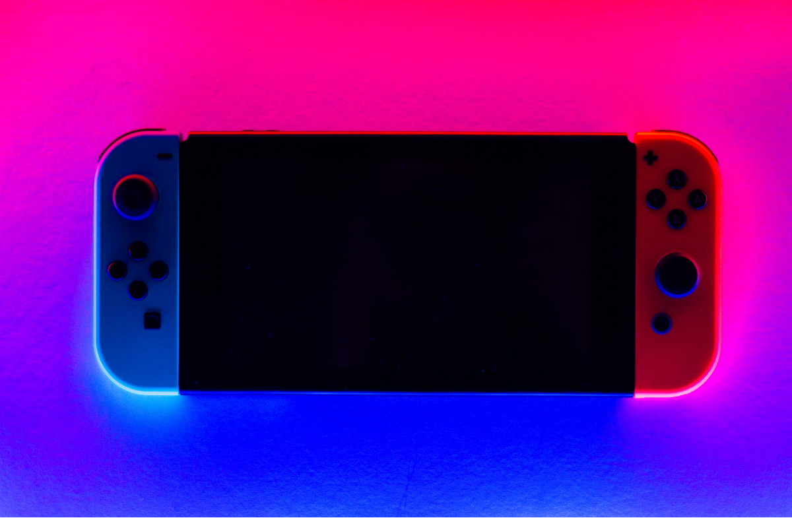
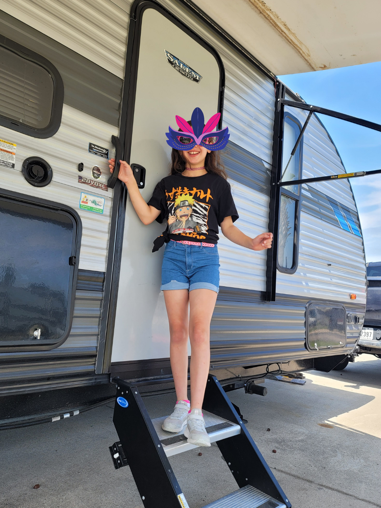

Ilene began playing softball about three years ago. She started as most people do in the outfield. As she
practiced more, she was given the spot of a shortstop. One day, she decided to give pitching a try and
immediately fell in love. Ilene is now the star pitcher for her teams, the Panthers and Crush.

Gaming
Ilene loves to play video games online. She enjoys everything from slow-paced gaming like
Animal Crossing to fast-paced games like Fortnite. Did you know that Animal Crossing fans have created a webpage named
Nookipedia to help players make the most of their game?

Traveling
Ilene loves home away from home by traveling with her family in their RV. As an avid outdoor lover she enjoys staying at
state parks the most.
Though sometimes the nice RV parks with water parks are a lot of fun. Check out the
Texas State Parks website to see where Ilene might go to next.